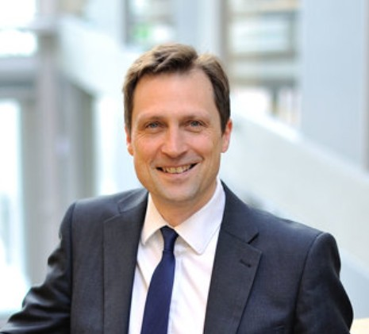
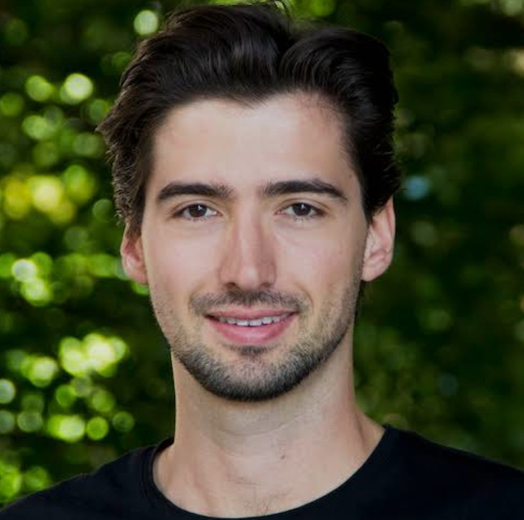
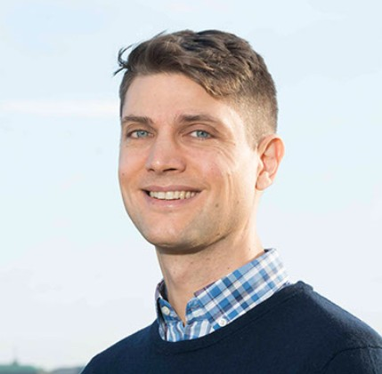
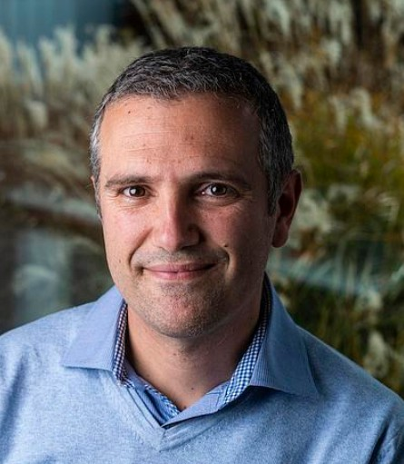

Keynote Speakers
We are delighted to welcome our keynote speakers to MVEO 2026. Speaker details and talk descriptions are listed below:
Professor Peter Atkinson

Distinguished Professor of Spatial Data Science at Lancaster University
Talk: Spatial Latent Gaussian Modelling with Change of Support
Spatial environmental data on some property of interest are often derived from multiple sources (e.g. EO satellites, in situ sensors, survey samples) with different spatial supports (the space on which a measurement or observation is defined). It is also common for predictors to be measured on different spatial supports than the response variable in a regression-type setting. The spatial support is ubiquitous for environmental science data, while notably absent in some other fields such as those that depend on natural language. Thus, for environmental science, image and data fusion are crucial tasks, including as part of multi-modal fusion. A common approach for handling different supports, used by practitioners, is to project all variables onto a common support (e.g., via downscaling or interpolation) and then use standard spatial models on this common support. However, this approach can introduce biases and the statistical coherence between different supports is not guaranteed. I will introduce a Bayesian spatial latent Gaussian model (SLGM) that can handle data with different rectilinear supports in the response variable and the predictors. The SLGM can handle changes of support naturally according to the properties of the spatial stochastic process being used, and can account for change of support uncertainty in parameter estimation and prediction. In the SLGM, spatial stochastic processes are defined as linear combinations of basis functions where Gaussian Markov random fields (GMRFs) define the weights. This process can then be projected to different (any) spatial supports whilst maintaining the same underlying parameters. The generalisation potential of the approach is demonstrated through simulation and a real use case, modelling the land suitability of improved grassland in South Wales, UK.
Dr. Nico Lang

Asst. Prof. at the University of Copenhagen
Talk: Learning Representations for Global Ecosystem Modelling
Learning Representations for Global Ecosystem Modelling Abstract: Knowing the global distribution of vegetation structure is an essential prerequisite to better quantify, model, and manage carbon, water, energy, and biodiversity in the Earth system. Despite its recognized importance, vertical structure measurements remain sparse at global scales. Data-driven approaches offer great potential for integrating data from different space missions, overcoming the limitations of individual missions, and learning generalizable representations. However, many Earth observation (EO) tasks, particularly in environmental remote sensing, remain challenging because of the limited availability of reference data and its geographic and temporal biases. In this talk, I will first present our recent research on computing a vertical vegetation structure model of the Earth. By combining optical satellite imagery with sparse spaceborne lidar data, we go beyond canopy height to develop a three-dimensional representation of vegetation structure. I will demonstrate how this representation improves sensitivity to fine-scale structural variations, for example, enabling the identification of forest naturalness. Second, I will discuss the potential of multimodal EO data for representation learning and introduce MMEarth-Bench, a multimodal benchmark dataset for environmental remote sensing. I will present our evaluation of existing pretrained models and introduce our test-time adaptation approach, which adapts models at test time using multimodal reconstruction as a proxy signal. Bio: https://langnico.github.io/_pages/bio/
Dr. Olof Mogren

Principal Researcher at RISE Research institutes of Sweden
Talk: TBC....TBC...TBC....TBC...TBC....TBC...
TBC....TBC...TBC....TBC...TBC....TBC...TBC....TBC...TBC....TBC...TBC....TBC...TBC....
Dr. Devis Tuia

Associate Professor, Environmental Computational Science and Earth Observation Laboratory, EPFL
Talk: Multimodal Earth foundation models spanning sensors and domains
In this talk I will discuss recent advances in multimodal Earth foundation models, their application in remote sensing and how we can achieve more by integrating models across modalities and disciplines.
Dr. Maram Hasan
Postdoctoral Researcher at IIT Bombay
Talk: Agentic AI for Earth Observation: Towards Adaptive and Reliable Geo-Intelligence
The next frontier of AI for Earth observation is not only to interpret what is observed, but to integrate heterogeneous evidence, reason across multiple stages, and support complex decision-making. Agentic AI offers a promising paradigm for this transition by enabling systems to coordinate specialized capabilities, interact with external tools, and adapt their behavior across complex tasks. However, translating these ideas into geo-intelligence introduces new challenges in orchestration, adaptability, verification, and reliability.This talk will examine what current agentic approaches can enable for complex geospatial tasks. It will also look beyond fixed architectures toward open-world tasks and capabilities, as well as robust and reliable systems that can verify execution, detect and attribute faults, and recover selectively when failures occur. The talk will conclude with open research directions toward the design of agentic Earth-observation systems that are adaptive, auditable, and resilient. Dr. Maram Hasan is a Postdoctoral Fellow at IIT Bombay, with research interests in agentic AI, multimodal learning, and trustworthy AI, and a current focus on remote sensing and geo-intelligence. Her work explores reliable and aligned agentic systems for complex reasoning and decision-making, including structured orchestration, adaptive multi-agent coordination, and robust execution and recovery. She received her Ph.D. in Computer Science and Engineering from IIT Roorkee, with a focus on collective intelligence and reinforcement learning, and has industry research experience in large-model post-training and alignment.